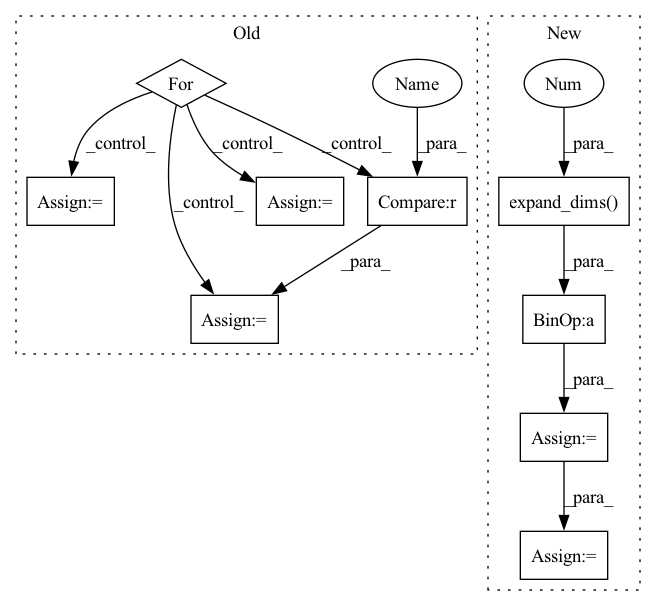

Pattern ID :22579
Before Change
if deltas is not None and changepoints_t is not None:
gammas = -changepoints_t * deltas
for s, t_s in enumerate(changepoints_t):
indx = t >= t_s
k_t[indx] += deltas[s]
m_t[indx] += gammas[s]
return k_t * t + m_t
After Change
segment_id = np.sum(past_changepoint, axis=1) - 1
k_t = np.ones((len(t), 1)) * np.expand_dims(k, 0)
m_t = np.ones((len(t), 1)) * np.expand_dims( m, 0 )
k_t = np.squeeze(k_t[np.arange(len(t)), segment_id])
m_t = np.squeeze(m_t[np.arange(len(t)), segment_id])
trend = k_t * t + m_t
return trendIn pattern: SUPERPATTERN
Frequency: 3
Non-data size: 9
Instances Fragment ID: 71376704
Project Name: ourownstory/neural_prophet
Commit Name: 8dcdd6a5e564ef4412c327d2550025a5647b63a6
Time: 2020-05-22
Author: oskar.triebe@merantix.com
File Name: code/utils.py
M Class Name: AnonimousClass
N Class Name: AnonimousClass
M Method Name: piecewise_linear(4)
N Method Name: piecewise_linear(5)
M Parent Class:
N Parent Class:
M File Name: code/utils.py
N File Name: code/utils.py
M Start Line: 21
M End Line: 47
N Start Line: 51
N End Line: 62
Before Change
// 创建一副新图，并根据每个像素点的种类赋予颜色
//------------------------------------------------//
seg_img = np.zeros((np.shape(pr)[0], np.shape(pr)[1], 3))
for c in range(self.num_classes):
seg_img[:,:,0] += ((pr[:,: ] == c )*( self.colors[c][0] )).astype("uint8")
seg_img[:,:,1] += ((pr[:,: ] == c ) *( self.colors[c][1] )).astype("uint8")
seg_img[:,:,2] += ((pr[:,: ] == c )*( self.colors[c][2] )).astype("uint8")
//------------------------------------------------//
// 将新图片转换成Image的形式After Change
image = Image.fromarray(np.uint8(seg_img))
elif self.mix_type == 2:
seg_img = (np.expand_dims( pr != 0, -1 ) * np.array(old_img, np.float32)).astype("uint8")
//------------------------------------------------//
// 将新图片转换成Image的形式
//------------------------------------------------//
image = Image.fromarray(np.uint8(seg_img))
return image
Fragment ID: 71376834
Project Name: bubbliiiing/hrnet-pytorch
Commit Name: e53724ea45003d8acd5d8b5465fa97038d486824
Time: 2022-03-19
Author: 3323290568@qq.com
File Name: hrnet.py
M Class Name: HRnet_Segmentation
N Class Name: HRnet_Segmentation
M Method Name: detect_image(2)
N Method Name: detect_image(2)
M Parent Class: object
N Parent Class: object
M File Name: hrnet.py
N File Name: hrnet.py
M Start Line: 153
M End Line: 170
N Start Line: 113
N End Line: 188
Before Change
// 创建一副新图，并根据每个像素点的种类赋予颜色
//------------------------------------------------//
seg_img = np.zeros((np.shape(pr)[0], np.shape(pr)[1], 3))
for c in range(self.num_classes):
seg_img[:,:,0] += ((pr[:,: ] == c )*( self.colors[c][0] )).astype("uint8")
seg_img[:,:,1] += ((pr[:,: ] == c ) *( self.colors[c][1] )).astype("uint8")
seg_img[:,:,2] += ((pr[:,: ] == c )*( self.colors[c][2] )).astype("uint8")
//------------------------------------------------//
// 将新图片转换成Image的形式
After Change
image = Image.fromarray(np.uint8(seg_img))
elif self.mix_type == 2:
seg_img = (np.expand_dims( pr != 0, -1 ) * np.array(old_img, np.float32)).astype("uint8")
//------------------------------------------------//
// 将新图片转换成Image的形式
//------------------------------------------------//
image = Image.fromarray(np.uint8(seg_img))
return image
Fragment ID: 71376712
Project Name: bubbliiiing/pspnet-pytorch
Commit Name: 373340e315d6e9a029041ec293673c06c3c1cb7e
Time: 2022-03-04
Author: 3323290568@qq.com
File Name: pspnet.py
M Class Name: PSPNet
N Class Name: PSPNet
M Method Name: detect_image(2)
N Method Name: detect_image(2)
M Parent Class: object
N Parent Class: object
M File Name: pspnet.py
N File Name: pspnet.py
M Start Line: 155
M End Line: 172
N Start Line: 115
N End Line: 190